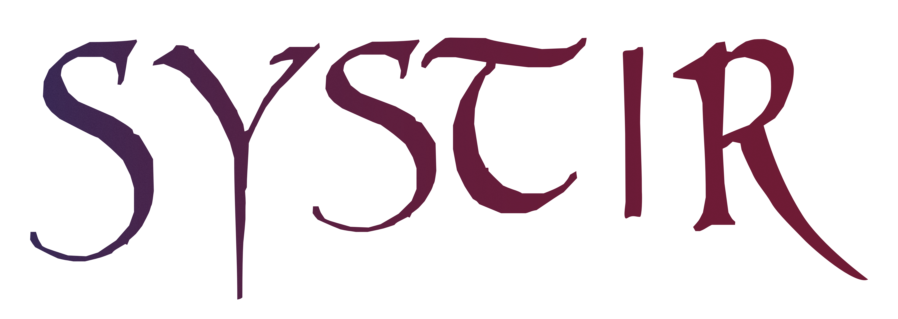
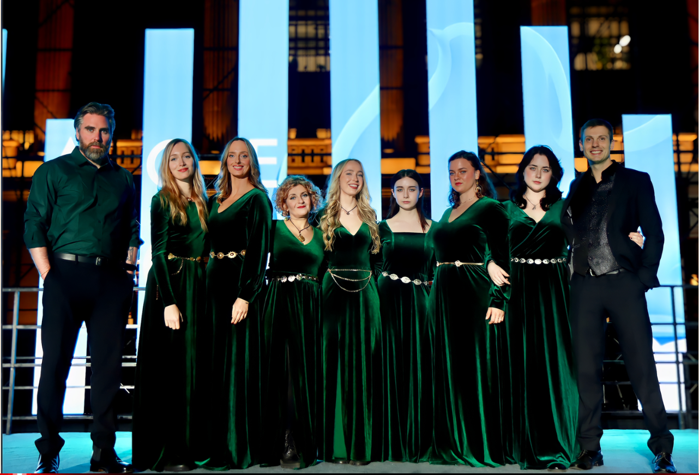

Irish contemporary vocal ensemble

Ancient voice, contemporary ritual, and performance rooted in story.
SYSTIR brings together ethereal vocal textures, old and new traditions, and a performance language shaped by the female voice.
About the ensemble
A voice between ancient tradition and modern storytelling
SYSTIR, meaning “sister” in Icelandic, emerged from the legendary ANÚNA to forge a distinctive musical identity focused on the female voice. The ensemble combines contemporary performance techniques with older traditions, creating an ethereal and immersive sound world.
Their repertoire draws from indigenous European music, medieval sources, original songs, and contemporary artists, connecting historical memory with present-day emotional experience.
Read the full biography
Featured performance
Watch SYSTIR perform
A first listening point for visitors arriving on the homepage.

The ANÚNA Collective
Part of a wider vocal tradition
SYSTIR is part of the ANÚNA Collective, with artistic direction from Irish composer Michael McGlynn. Their performances span original songs and arrangements alongside works connected to older sacred, folk, and storytelling traditions.
The ensemble has toured internationally, bringing an Irish-rooted but outward-looking vocal identity to audiences across Europe and beyond.
Media archive
Images, performances, and live recordings
A curated glimpse of SYSTIR’s visual and performance world.
Members
Performers and collaborators
SYSTIR features a flexible ensemble of six or more performers on stage, with members and collaborators drawn from the wider ANÚNA Collective.
